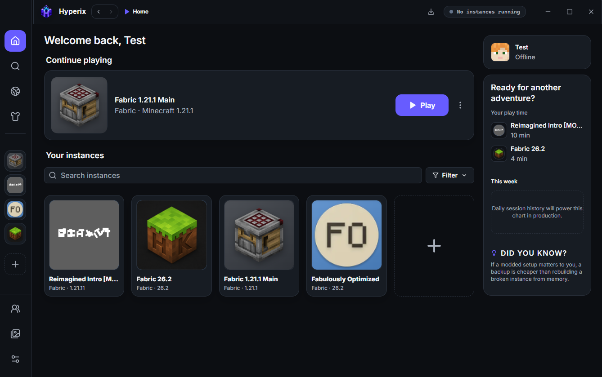
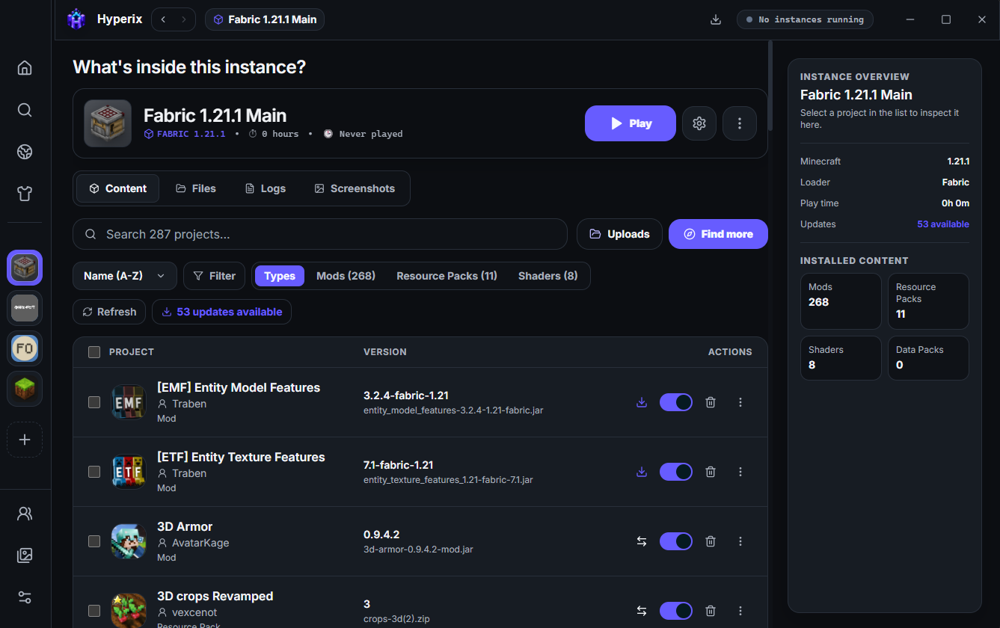
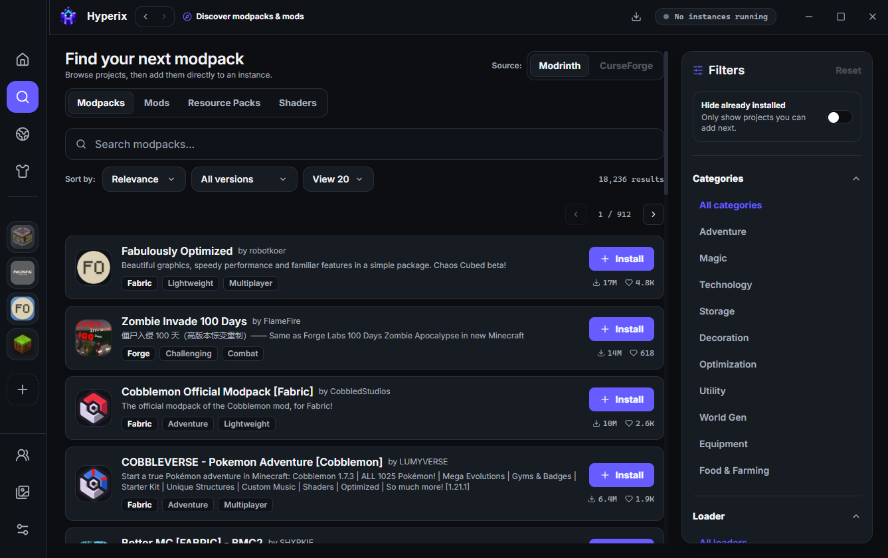

Isolated instances
Mods, configurations, screenshots, worlds, and logs stay with the Minecraft instance they belong to.
Independent Minecraft desktop launcher
Hyperix helps players create and manage isolated Minecraft instances, organize local content, and understand what belongs to each setup.
Mods, configurations, screenshots, worlds, and logs stay with the Minecraft instance they belong to.
Inspect installed content, manage files natively, and keep a clear view of storage and diagnostics.
Content discovery uses official provider APIs and respects every creator’s third-party distribution choice.
A closer look



Content providers
Hyperix uses official provider APIs for compatible Minecraft content discovery. It does not scrape provider websites, re-host files, bypass author restrictions, or present creator content as its own.
For CurseForge, a project is downloaded only where the creator has explicitly approved third-party distribution. Otherwise, Hyperix directs the player to the official project page.
Project status
Hyperix is currently an independent, non-commercial project. There are no advertisements, subscriptions, paid tiers, or download-related revenue.